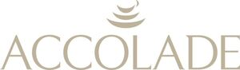

Trade Mark Journal No.2026/011 13 March 2026
WO0000001890242 (8,21)
Office of origin: France
Date of International Registration:18 July 2025
Date of designation in the UK:
18 July 2025

International priority date claimed: 22 January 2025
(India)
(6817387)
- Class 8
- Cutlery [knives, forks and spoons]; hand-operated sharpening tools and instruments; non-electric razors.
- Class 21
- Towel rings; glassware, porcelain and earthenware articles; table plates; cocktail stirrers; disposable table plates; chopsticks [for eating and as kitchen utensils]; glass flasks [containers]; pans, saucepans, stew-pots, sauté pans, cooking pots, removable handles and covers; butter dishes; candle rings; cookie jars; meal boxes; bread bins; tea caddies; food storage tins; bowls; non-electric kettles; tea infusers; insulating flasks; bottles sold empty; refrigerating bottles; cooking spits; cooking skewers, of metal; cruets; nutcrackers; non-electric coffeepots; decanters; ceramics for kitchen use; beer mugs; butter-dish covers; candlesticks; cheese-dish covers; liqueur caskets; non-electric hot pots; egg cups; bread baskets; pastry cutters; fruit cups; small bowls for food; dish covers; pot lids; pitchers; jugs; ice cream scoops; serving spoons; toothpicks; decanter coasters, neither of paper nor of textile materials; trivets [table utensils]; flasks; flasks; serving forks; tumblers; baking grills (non-electric kitchen utensils); cooling racks for food; vegetable dishes; serving ladles; mixers for beverages [shakers]; ice molds; manual pepper mills; mugs; fitted picnic baskets, including dishes; bottle openers, electric and non-electric; drinking straws; tea strainers; pie servers; salad tongs; sugar tongs; brochette skewers; cutting boards for the kitchen; bread boards; dishes; serving dishes; frying pans; pepper pots; knife rests for the table; toothpick holders; pots [jars]; flower pots; garlic presses; fruit juicers; crumb trays; kitchen graters; drinking vessels; heat-insulated containers; service containers; containers for food; containers for beverages; tea bag rests; place mats, not of paper or textile; isothermal bags; salad bowls; salt cellars; ice buckets; non-electric egg separators; coffee services; spice sets; tea services; cruets; porcelain services; place mats, neither made of paper nor of textile materials; apparatus for making ices and ice cream; saucers; soup bowls; drip mats not made of paper or textile for containers for beverages; saucers for coffee; saucers for tea; spatulas; sugar bowls; menu card holders; holders for plants [flower arrangements]; non-electric tajines; cups; coffee cups; teacups; teapots; corkscrews, electric and non-electric; household or kitchen utensils and containers; tableware; vases; drinking glasses.
ECF
Representative: Mathys & Squire LLP, The Shard, 32 London Bridge Street London SE1 9SG UNITED KINGDOM